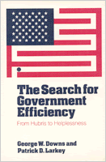

<body bgcolor="#FFFFFF" text="#000000" link="#0000FF" vlink="#CC0000" alink="#CC0000"><center><hr width="350" size="1" align="center" noshade>A fascinating study that combines careful scholarship with irreverent humor<hr width="350" size="1" align="center" noshade><p><a href="https://cdcshoppingcart.uchicago.edu/Cart/ChicagoBook.aspx?ISBN=9780877224099&&PRESS=temple" target="_top">Buy this book!</a> | <a href="https://cdcshoppingcart.uchicago.edu/Cart/Cart.aspx?PRESS=temple" target="_top">View Cart</a> | <a href="https://cdcshoppingcart.uchicago.edu/Cart/Cart.aspx?PRESS=temple" target="_top">Check Out</a></p><p></p></center><!--none//--><h1>The Search for Government Efficiency</h1>
<H2>From Hubris to Helplessness</H2>
<h3>George W. Downs and Patrick D. Larkey</h3>
<P>cloth 0-87722-409-9 $32.95, Jan 86, <FONT COLOR=#990033>Out of Print</FONT>
<BR> 252 pp
</P><h3 align="center"><P><font color="#996633">Louis Brownlow Book Award, National Academy of Public Administration,
1988</font></P>
</H3>
<p>"Mr. Gerald L. Lichty received a notice of overdue personal property taxes from Prince William County, Virginia. The notice told Lichty to pay promptly or legal action would begin on August 14. The amount in question was one cent."
<p>Every American citizen, as in the above example, has heard at least one similar story of government inefficiency or waste. In this fascinating study that combines careful scholarship with irreverent humor, <I>The Search for Government Efficiency</I> examines the problem of government performance. Downs and Larkey's discussion shows how the most commonly-held beliefs concerning the operations of government and private sector efficiency are not soundly based in fact. They conclude that governments are not as poorly managed, and businesses are not as well managed, as is generally believed. The strength and number of their examples point to the fact that running a government bureaucracy is not the same as running a business. The problem of government, therefore, is not the size or rate of growth but what the government is doing, and how it is doing it.
<p>Also included in this first full-length analysis of government efficiency is a critique of the 1984 report of the Grace Commission, known formally as the Precedent's Private Sector Survey on Cost Control in the Federal Government, as an example of the most ambitious and extensive effort of in the United States history to bring management experience of the private sector to bear on government efficiency. Using the Grace Report as an example, the authors show that government reform almost never relies on the record of past reform attempts. They then extract from the history of efficiency reforms lessons that are both more realistic and effective.
<BR>&nbsp;<h2>Reviews</h2>
<p><i>"Writers whose lot it is to review books on government bureaucracy get awfully damned tired of political science professors and their jargonized, quantified, and rarified cures for what ails government. It is a joy, therefore, to report on a book written by that breed with wit, clarity, and insight; one that quotes with equal reverence the words of Yogi Berra, George Burns, Mary Poppins, and Calvin Coolidge."</i>
<br>&#151<b><i><a href="http://www.findarticles.com/p/articles/mi_m1316/is_v18/ai_4539833" target="new">Washington Monthly</a></i></b>
<BR>&nbsp;<H2>About the Author(s)</H2>
<P><b>George W. Downs</b> is Professor of Political Science at the University of California, Davis.</P>
<P><b>Patrick D. Larkey</b> is Associate Professor of Public Policy and Social Sciences at Carnegie-Mellon University.</P>
<BR><H2>Subject Categories</H2>
<p><A HREF="/tempress/general.html" TARGET="_top">General Interest</a>
</p>
<p align="center"><a href="https://cdcshoppingcart.uchicago.edu/Cart/ChicagoBook.aspx?ISBN=9780877224099&&PRESS=temple" target="_top">Buy this book!</a> | <a href="https://cdcshoppingcart.uchicago.edu/Cart/Cart.aspx?PRESS=temple" target="_top">View Cart</a> | <a href="https://cdcshoppingcart.uchicago.edu/Cart/Cart.aspx?PRESS=temple" target="_top">Check Out</a></p><p><font face="Arial" size="1"><a href="copyright.html" onMouseOver="window.status='Web Copyright Policy';return true;" onMouseOut="window.status=''" title="Web Copyright Policy">&copy;</a> 2015 <a href="http://www.temple.edu" target="new" onMouseOver="window.status='Link to Temple University home page';return true;" onMouseOut="window.status=''" title="Link to Temple University home page">Temple University</a>. All Rights Reserved. http://www.temple.edu/tempress/titles/404_reg.html</font></p>